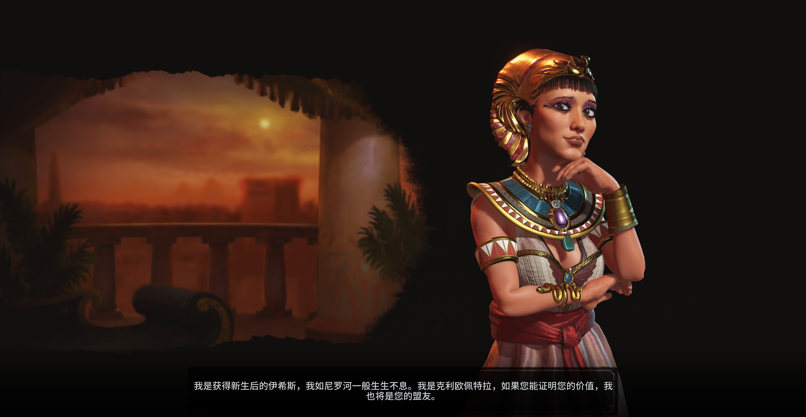

埃及

领袖：克莉奥佩特拉（Cleopatra）
领袖倾向：尼罗河女王（Queen of the Nile）
喜欢军事力量强大的文明，并试图与其同盟防止军事冲突；敌视军事力量弱小的文明。
领袖奖励：地中海的新娘（Mediterranean's Bride）
埃及发起的国际商路为埃及额外提供4金钱。
其它文明连接到埃及的商路为埃及额外提供2金钱，为商路发起方额外提供2粮食。
特色单位：战车射手（Maryanu Chariot Archer）
远古时代远程单位，由科技项目「车轮」解锁。要在非丘陵、森林或雨林的地格开始回合才使移动力增加2。
特殊设施：【改良设施】狮身人面像（Sphinx）
由远古时代人文项目「工艺」解锁。产出1信仰和1文化。邻近奇观时额外产出2信仰。不能与其它狮身人面像相邻。
特殊能力：天赐大河（Iteru）
罗马的城市（不论通过何种方式获得）自动获得本国贸易站。
建立在首都商路辐射范围内的罗马城市自动获得通向首都的道路。